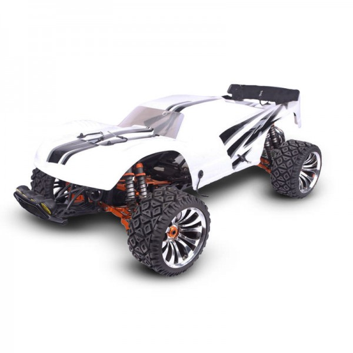

Southern Peninsula Off Road Radio Control Club
Latest Rc News

events coming up
- June 20: 1/8th scale nitro derby
- June 22: Rock crawler challenge
- June 22: The Big Dirty(Aussie edition) 1/5th scale Gas truck race
And here are our top members for February 2020
- George Peters, who took time on his day off to help clean up the track after the storm
- Daniel Petty, for repairing the entrance gate which several others had ignored
- Paul Schofield, who introduced six new members in the month of february
these three have now been entered into the end of year raffle, with the chance to take home a new King Motor Km t2000 Gas truck!
